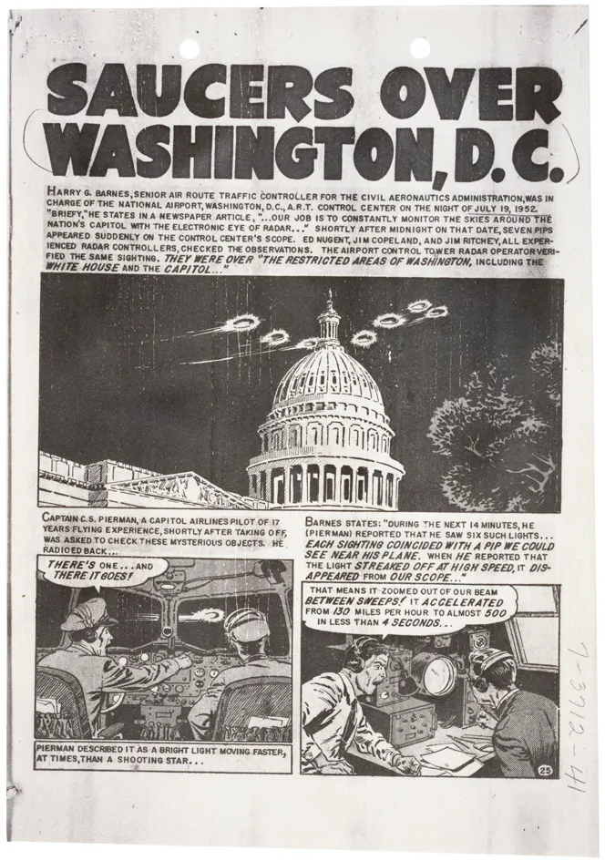

A series of UFO sightings were reported in Washington, D.C. (later became known as the Washington flap, the Washington National Airport Sightings, or the Invasion of Washington.) The most publicized sightings took place on July 18-19 and July 26-27. UFO historian Curtis Peebles called the incident "the climax of the 1952 UFO flap"

By coincidence, USAF Captain Edward J. Ruppelt, the supervisor of the Air Force's Project Blue Book investigation into UFO sightings, was in Washington at the time. However, he did not learn about the sightings until Monday, July 21, when he read about the sightings on July 19-20 in a Washington-area newspaper. After talking with intelligence officers at the Pentagon about the sightings, Ruppelt spent several hours trying to obtain a staff car so he could travel around Washington to investigate the sightings, but was refused as only generals and senior colonels could use staff cars. By this point Ruppelt was so frustrated that he left Washington and flew back to Blue Book's headquarters. Upon returning to Dayton, Ruppelt spoke with an Air Force radar specialist, Captain Roy James, who felt that unusual weather conditions could have caused the unknown radar targets.
In my opinion, no. I don't believe it's the weather because of the witnesses and the radar detection, by how many witnesses there were, wouldn't at least one witness realise it was just the weather?